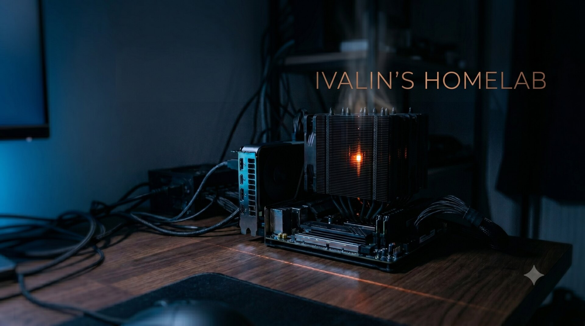
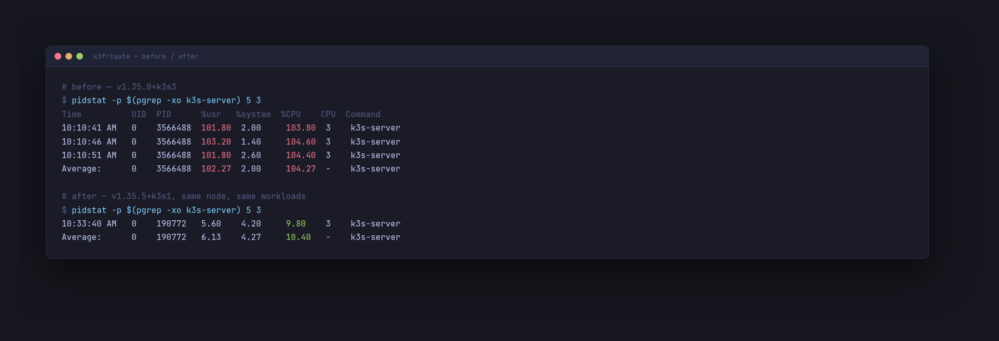
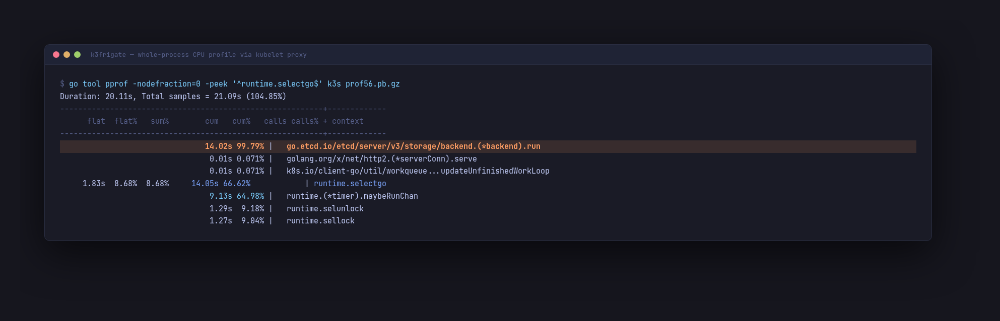
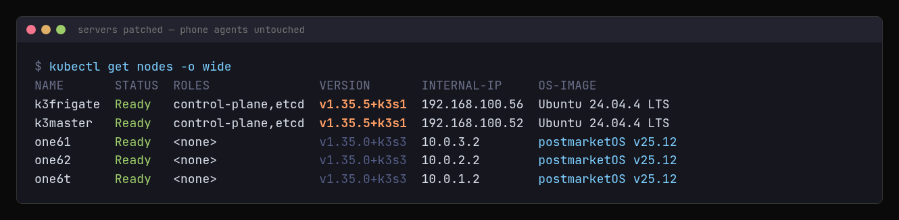

Empty Logs and a Burning Core: Tracing a Silent k3s Failure Three Layers Down
A backup that never ran, a CPU core that never rested — and why they turned out to be the same bug.
Everything looks idle. One core is not.
A Backup Dies With Empty Logs
Routine morning check: the nightly CronJob that mirrors Frigate recordings had a row of
Error pods. Exit code 2, dead in exactly 10 seconds — and
kubectl logs returned nothing. Zero lines from a script full of
echo statements. So it died on the only line whose output was thrown away:
set -e
apk add --no-cache openssh-client rsync >/dev/null 2>&1 # first line, output discarded
...
echo "[$(date)] Starting rsync mirror..." # never reached
The job installed rsync at runtime. It almost works — until a
02:00 backup depends on working DNS at 02:00, DNS gets flaky, and the evidence goes to
/dev/null. Fix: an image with rsync baked in (instrumentisto/rsync-ssh),
plus KubeJobFailed on the Alertmanager email whitelist.
The honest part: the first successful run transferred 42 GB — the initial sync. In 28 days the job had never completed once. A backup that fails silently is not a backup. It is a feeling.
Who Is Eating the Core
The DNS flakiness needed explaining. kubectl top said the server was
normal-ish. pidstat did not:

Same process, same workloads. kubectl top averaged this down to "normal-ish".
One flat core, around the clock, surviving k3s restarts — the freshly restarted process spun from minute one. A load problem fluctuates. A stuck spin does not. The ignition lined up with the other etcd server being down.
Profiling a Stripped Binary
perf record gave raw addresses — k3s ships stripped. But Go binaries
keep gopclntab, the function table used for panics, and
go tool addr2line reads it. First pass produced garbage anyway: I was
resolving against /usr/local/bin/k3s, while k3s self-extracts and
runs from /var/lib/rancher/k3s/data/<hash>/bin/k3s.
/proc/<pid>/exe settles it in one line; I asked an hour too late.
The clean tool was hiding in plain sight. k3s runs everything in one process, and the kubelet ships a debug endpoint the API will proxy:
kubectl get --raw /api/v1/nodes/k3frigate/proxy/debug/pprof/profile?seconds=20On a normal cluster that profiles the kubelet. On k3s it is a keyhole into the entire control plane — symbolized CPU profile, no restarts, no flags.

66% of all CPU in runtime.selectgo — 99.79% of it from one caller: etcd's batch-commit loop.
etcd's backend.run should tick every 100 ms and cost nothing. The goroutine
dump showed why it did not: two backend.run goroutines. One
parked, healthy. One [runnable], created on the bootstrap path, spinning on
time.NewTimer(0):
t := time.NewTimer(b.batchInterval) // batchInterval == 0 → fires immediately
for {
select { case <-t.C: ... }
t.Reset(b.batchInterval) // 0 again → fires immediately, forever
}A leaked backend, never closed, no zero-guard. One goroutine, one core, forever.
Upstream Already Knew
Searching with the right nouns found it immediately: closing the MVCC store does not
close the backend passed into it
(k3s-io/k3s #13571). Fixed in
v1.35.1+k3s1; we were on v1.35.0+k3s3. etcd snapshot, then the installer with
INSTALL_K3S_VERSION pinned, one server at a time: 104% → ~10% on both.

Both etcd servers patched. The three agents are OnePlus phones on USB tether — they never noticed.
And the two stories close into one. The leaked goroutine had been degrading the server
— slow kubelet, struggling CoreDNS, the DNS flakiness that killed an
apk add in a backup job that could not tell anyone. The backup did not fail
because of rsync. It failed because a goroutine three layers down was spinning on a
zero-length timer.
Things That Went Wrong
The logs were empty by design. /dev/null for tidiness cost 28 days of undetected failure. Discard output only after the script has proven it can speak.
kubectl top averaged the problem away. 13% on a node pidstat showed at 104%. Averages are for capacity planning, not diagnosis.
Wrong binary, wrong symbols. Half a day of tracer red herrings from resolving against the installer binary instead of the self-extracted one that runs.
Impact
- k3s-server CPU: ~104% → ~10% of a core, on both control-plane servers
- Busiest node overall: 67% → ~35% CPU
- Backup: 0 completed runs in 28 days → verified nightly mirror, alert within a minute
- Zero restarts needed before the root cause was identified
The Payoff
The artifact is small: one image swap, one alert rule, one version bump. The understanding
is the part I keep — a stripped Go binary in production is still fully observable if
you know the keyholes: gopclntab for names, the kubelet proxy for profiles,
the goroutine dump for the created-by line that points at the leak.
Logs tell you what the code chose to say. The profiler tells you what it actually did.
Cluster Context
| Node | Role | Arch | Hardware |
|---|---|---|---|
| k3master | control-plane, etcd | amd64 | x86 mini PC, backup target (1.8 TB) |
| k3frigate | control-plane, etcd, NVR | amd64 | x86, GTX 1050 Ti, 16 GB RAM, Frigate + 7 cameras |
| one6t | Worker | arm64 | OnePlus 6T (Snapdragon 845, 6GB) |
| one62 | Worker | arm64 | OnePlus 6 (Snapdragon 845, 8GB) |
| one61 | Worker | arm64 | OnePlus 6 (Snapdragon 845, 8GB) |
Manifests for the backup job and alert routing live in the homelab-config repo.
Previous posts: Every Light Was Green. The Cluster Was Dead. · The Tunnel Was Up. The Cameras Were 502. · What broke during a k3s sqlite to etcd HA migration · Running Edge AI on Broken Phones